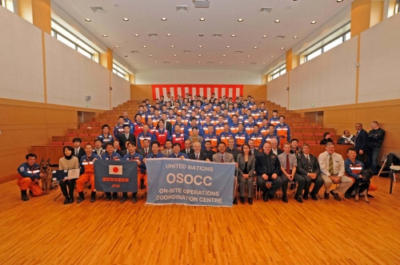

Over the past decade disasters around the world, affecting urban areas of high density populations living and working in concrete and reinforced concrete single and multi story dwellings, has increased the need for sophisticated USAR capabilities. While deployment of international USAR teams has been of great benefit to trapped victims and the affected country, lessons learned have revealed the need for responding USAR teams to be integrated within a well coordinated system to ensure the most appropriate use of available USAR resources. Therefore, INSARAG saw a need to classify international USAR teams according to their operational capabilities in order to ensure that only qualified and appropriate international USAR resources are deployed to an emergency.
The INSARAG community acknowledges the importance of providing rapid professional USAR support during disasters which result in structural collapse. In an effort to achieve this objective and the need to ensure that only qualified and appropriate international USAR resources are deployed to an emergency, the INSARAG community has developed a voluntary, independent, peer review process, the INSARAG External Classification (IEC).
To ensure that a USAR team’s international response capability remains current and continues to subscribe to the INSARAG methodology, the INSARAG External Reclassification (IER) process has also been endorsed. Taken together these two processes form the INSARAG Classification System.
Being established in 2005, this system is designed to ensure that assisting countries send a team with the required capabilities. It also plays a major role in ensuring that the appropriate resources are assigned to the appropriate sites as soon as possible. The INSARAG USAR team classification system has identified three levels of classification. These are Light, Medium and Heavy USAR teams. Details of the requirements that teams need to achieve in order to be classified, application to the IEC and all other relevant details are listed in the IEC/IER Guidelines.